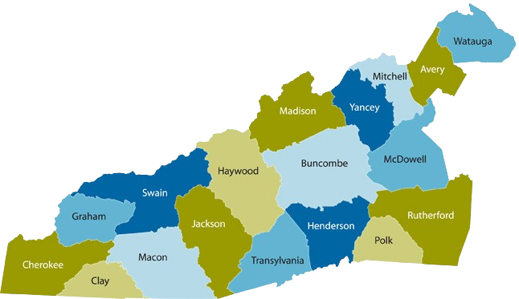
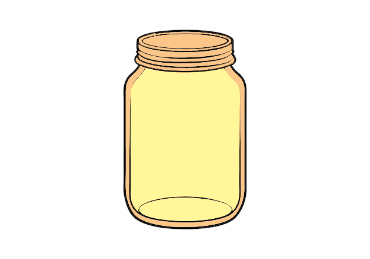

From WNC Orchards
to Apple Jelly!
Embark on a hands-on journey through Western NC! Master soil prep, bee pollination, fruit thinning, and cold storage across 4 counties to gather your ingredients and cook real apple jelly!

Western NC Farm Exploration
 0/4
JARS
0/4
JARS
Interactive Western NC County Map
Click on the pulse-glowing county pins to start learning sustainable orchard practices and claim your jars!
Apple Growth, Soil Prep & Pruning
Master how trees grow, then jump into the interactive pruning and soil enrichment game below!

1. Apple Grafting & Trunk Growth
Apple cultivars grow from grafting desirable shoots onto hardy rootstocks, forming strong trunks to support heavy crops.

2. Winter Pruning & Organic Compost
Trimming dead branches lets sunlight penetrate the canopy, while organic compost feeds beneficial soil microbes.
Interactive Pruning & Soil Prep Challenge
Tap targets to complete!Click the 2 overgrown branches to prune the tree, then tap the soil zone to add compost!
3 orchard care tasks remaining!
Why do fruit growers prune apple trees during winter dormancy?

Haywood County Mission Accomplished!
You earned your 1st Jar of Apple Jelly!
Pollination & Nitrogen Cover Crops
Discover how bees power cross-pollination and clover enriches the soil naturally!

1. Bee Cross-Pollination
Insects transport pollen between varieties. Cross-pollination is required for blossoms to set fruit and seeds.

2. Natural Nitrogen Fixation
Planting clover cover crops fixes atmospheric nitrogen in root nodules, eliminating the need for synthetic chemicals.
Sustainable Eco-Match Challenge
Match related pairs!Click two matching cards to pair sustainable ecosystem concepts!
Select a card to pair!
How do clover cover crops enrich orchard soil naturally?
Why are wild bees critical for apple harvest yields?
Buncombe County Mission Complete!
You earned your 2nd Jar of Apple Jelly!
Fruit Thinning & Solar Ripening
Learn why culling overcrowded fruit lets remaining apples grow huge, sweet, and crisp!

1. Early Fruit Thinning
Removing excess small fruit prevents branch breakage and concentrates sugars into remaining prime apples.

2. Photosynthesis & Pigments
Direct sunlight sparks anthocyanin pigments in skins, turning apples deep red while boosting natural fructose levels.
Fruit Thinning Simulator
Tap small apples to remove!Click the 2 small green apples to leave 1 king apple for optimal sun ripening!
Remove 2 crowded apples!
What is the main agricultural benefit of thinning apple clusters in early summer?
McDowell County Mission Complete!
You earned your 3rd Jar of Apple Jelly!
Harvest Science & Cold Storage
Explore peak harvesting methods and cold temperature control in NC’s top apple county!

1. Upward Roll Harvest
Rolling apples upward releases the stem cleanly without tearing fruit spurs needed for next year's crop buds.

2. Controlled Cold Storage
Chilling harvested fruit slows down respiration, locking in natural pectin required for firm, clear jelly setting.
Brix Sugar Test & Harvest Sorting
Select 12°+ Brix apples!Click the 2 ripe apples with sugar levels above 12° Brix ideal for cooking jelly!
Select 2 high-sugar apples!
Why is post-harvest cold storage essential before jelly production?
You completed all regional orchard missions!
Congratulations!
You completed the entire Western NC Apple Jelly Sustainable Agriculture journey across all 4 counties!
You mastered Haywood, Buncombe, McDowell, and Henderson sustainable farming modules and collected all 4 Jelly Jars!